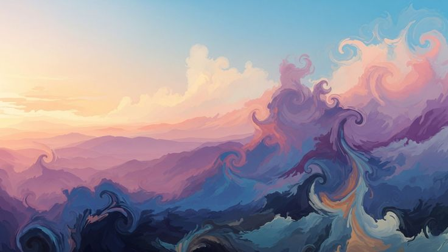
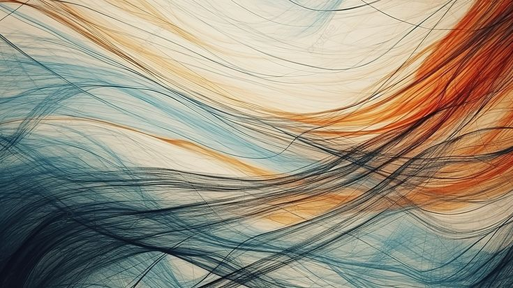
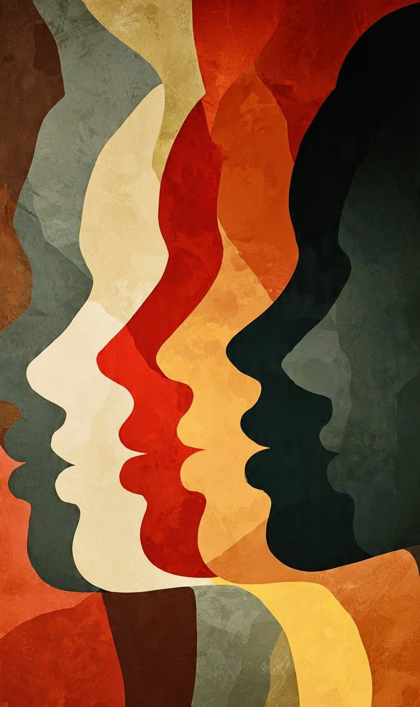
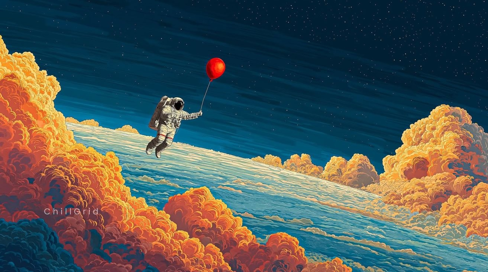
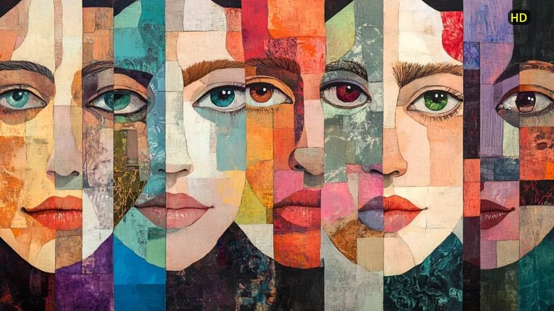
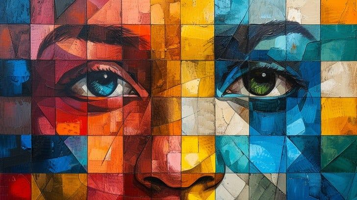

Де хаос перетворюється на структуру, а уява стає твердою точкою опори в повсякденні. Це простір для тих, хто шукає вихід із замкненого кола, прагне зрозуміти мову свого підсвідомого і готовий до справжньої зустрічі із собою.
Тривога, внутрішні конфлікти або яскраві сновидіння не виникають випадково. Це спроби нашого несвідомого вийти на зв'язок: через складні стани воно подає сигнали, а через розуміння символів ми розкриваємо їхню суть. Філософія «Локусу Уяви» полягає в тому, щоб перестати ігнорувати цей голос і перетворити його на джерело вашої внутрішньої сили.
Головна мета цієї роботи – ваша цілісність. Відчуття глибокої опори, розуміння, що з вами все гаразд, і здатність впевнено зустрічати реальність – так, щоб у ній завжди залишалося місце для ваших бажань, радості та розвитку.
Локус Уяви має різні виміри. Ви можете зазирнути сюди на коротку еспресо-зустріч, щоб знайти швидку опору посеред хаосу. Можете принести свій сон для дослідження. Або ж залишитися для глибокого, неспішного аналізу. Дослідіть ці формати нижче та оберіть ті двері, за якими зараз знаходиться ваше відчуття рівноваги.
20 хвилин тиші та спрямованої уваги перед тим, як розпочнеться ваш день. Це короткі доказові практики, що допомагають заземлитися, зібрати розфокусовані думки та віднайти внутрішню опору на сьогодні.
20 хв · безкоштовно / донат
15 хвилин, повністю присвячені вашому стану. Це безпечний простір, де напруга та емоційний хаос перетворюються на один глибокий видих. Тут можна швидко повернути ясність, відчути тверду землю під ногами та віднайти тишу, з якою легше рухатися далі.
15 хв · 200 грн
Простір для чесного спілкування про сьогодення. Це спільне дослідження живих і складних питань через призму особистого досвіду. Місце, де можна отримати усвідомлений зворотний зв'язок, розділити емоції та бути по-справжньому почутим.
900 грн / місяць
Глибока персональна робота з посланнями вашого несвідомого. Тут наш діалог стає провідником до ваших власних відповідей. Ми беремо ваш сон і дбайливо досліджуємо його крізь призму життєвої історії, вивільняючи приховані сенси та ресурси. Особливо цінно для циклічних снів, що повторюються роками.
50 хв · за запитом
Груповий простір для дослідження послань несвідомого. Ми вчимося аналізувати власні сни, безпечно взаємодіяти з Тінню та інтегрувати прихований ресурс образів у реальне життя. Робота спирається на авторський синтез глибинної психотерапії та нейробіології, що дозволяє почути свої справжні потреби.
2-3 год · 1000 грн
Глибинний та послідовний процес дослідження вашого несвідомого. Це системна робота з життєвими сценаріями, першопричинами складних станів та кризами. Формат для тих, хто готовий до тривалих змін, відновлення цілісності та по-справжньому глибокого знайомства зі своїм Я.
45 хв · 1-2 рази на тижденьЮнг називав це індивідуацією. Гурджієв – набуттям Внутрішнього Хазяїна. Роджерс – самоактуалізацією. Ви можете називати це як завгодно, але суть незмінна: ніхто не пройде цей шлях за вас.
Це фундаментальний модульний курс із глибинного самодослідження. Концентрат перевірених практик для тих, хто втратив орієнтири і готовий докласти зусиль, щоб віднайти власну внутрішню опору.
Залиште свої контакти, щоб першими дізнатися про старт. Або напишіть мені, якщо маєте запитання щодо формату.
Найсильніша трансформація стається тоді, коли всі наші стани знаходять підтримку і розуміння. У цьому просторі ви можете безпечно розмістити будь-який досвід: чи то раптову тривогу, чи то глибокі хитросплетіння сновидінь. Моє завдання – допомогти вам «перекласти» мову цих переживань на зрозумілу, усвідомлену форму. Поєднуючи аналітичну глибину з опорою на реальність, я допомагаю вам розплутати емоційний хаос, звільнитися від напруги та повернути авторство свого життя.
Робота з підсвідомим потребує часу та внутрішньої готовності. Якщо ви ще не обрали формат, який підходить вам саме зараз, але хочете бути на звʼязку – приєднуйтесь до мого Instagram або Telegram-каналу. Там я ділюся новинами, дієвими практиками, есеями та думками. Усім тим, що допомагає відновити зв'язок із власною Самістю – тим внутрішнім центром, який завжди залишається неушкодженим і прагне до цілісності.